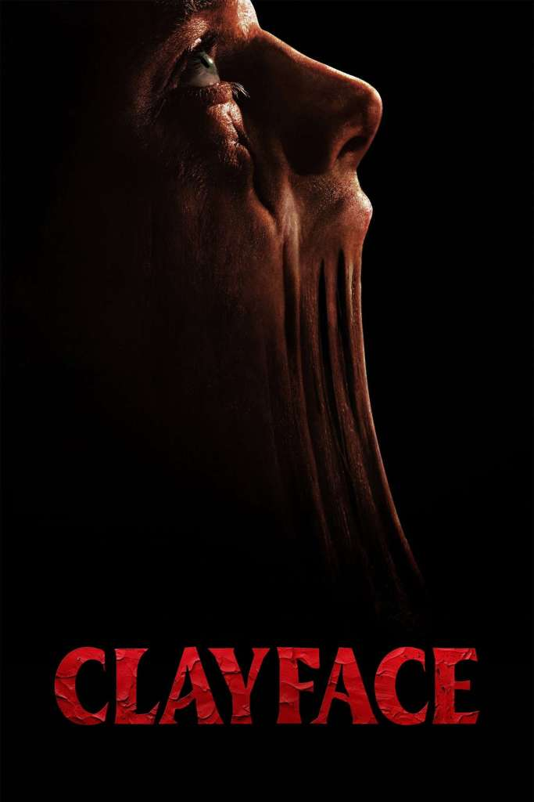

Clayface
Release Date: October 23, 2026
Genre: Horror • Thriller • Superhero
Director: James Watkins
Story
A rising Hollywood actor undergoes an experimental treatment that restores his appearance while pushing his identity and reality toward something terrifying.
Cast
Tom Rhys Harries, Naomi Ackie, David Dencik, Max Minghella, Eddie Marsan